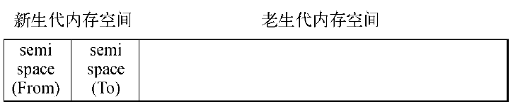
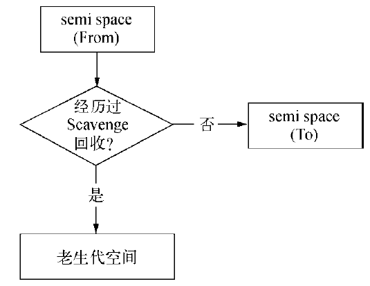
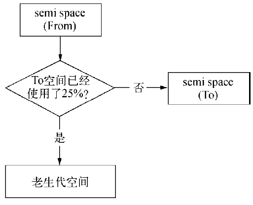
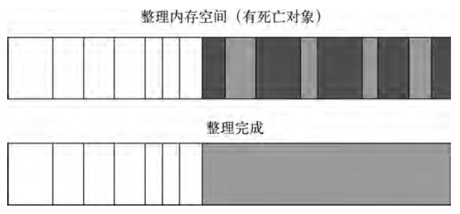
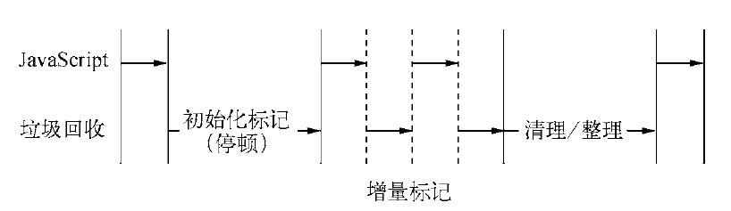

V8的垃圾回收机制与内存限制
Node与V8
Node选择了V8引擎，基于事件驱动、非阻塞I/O模型。
V8的内存限制
64位系统约为1.4GB，32位系统约为0.7GB，在这样限制下，将会导致Node无法直接操作大内存对象，比如无法将一个2GB的文件读入内存中进行字符串分析处理，即使物理内存有32GB，这样在单个Node进程的情况下，计算机的内存资源无法得到充足的使用。要知晓V8为何限制了内存的用量，则需要回归到V8在内存使用上的策略。
V8的对象分配
在V8中，所有的JS对象都是通过堆来进行分配的。
Node提供V8内存使用量查看方式：
$ node
$ process.memoryUsage();
{
rss: 18702336,
heapTotal: 10295296, //已申请到的堆内存；
heapUsed:5409936 //当前使用的量。
}
JS声明变量并赋值时，所使用对象的内存就分配在堆中。如果已申请的堆空闲内存不够分配新的对象，将继续申请堆内存，直到对的大小超过V8的限制为止。
至于V8为何要限制堆的大小，表层原因：V8最初为浏览器而设计，不太可能遇到用大量内存的场景。深层原因：V8的垃圾回收机制的限制。官方说法，以1.5GB的垃圾回收堆内存为例，V8做一次小的垃圾回收需要50毫秒以上，做一次非增量式的垃圾回收甚至要1秒以上。这是垃圾回收中引起JS线程暂停执行的时间，在这样时间花销下，应用的性能和响应能力都会直线下降。
V8提供选择来调整内存大小的配置，需要在初始化时候配置生效，遇到Node无法分配足够内存给JS对象的情况，可以用如下办法来放宽V8默认内存限制。避免执行过程内存用的过多导致崩溃
node --max-old-space-size=1700 index.js node --max-new-space-size=1024 index.js
V8的垃圾回收机制
V8主要的垃圾回收算法
V8垃圾回收策略主要基于分代式垃圾回收机制。现代的垃圾回收算法中按对象的存活时间将内存的垃圾回收进行不同的分代，然后分别对不同分代的内存施以更高效的算法。
V8的内存分代
在V8中，主要将内存分为新生代和老生代，新生代的对象为存活时间较短的对象，老生代的对象为存活时间较长或常驻内存的对象
- V8堆的整体大小就是新生代所用内存空间加上老生代的内存空间。
- V8分配内存大小，可以通过源码找到相关设置，Page::kPageSize的值为1MB。
// a multiple of Page::kPageSize
`#`if defined(V8_TARGET_ARCH_X64)
`#`define LUMP_OF_MEMORY ( 2 * MB)
code_range_size_(512*MB),
`#`else
`#`define LUMP_OF_MEMORY MB
code_range_size_(0),
`#`endif
`#`if defined(ANDROID)
reserved_semispace_size_(4 * Max(LUMP_OF_MEMORY, Page::kPageSize)),
max_semispace_size_(4 * Max(LUMP_OF_MEMORY, Page::kPageSize)),
initial_semispace_size_(Page::kPageSize),
max_old_generation_size_(192*MB),
max_executable_size_(max_old_generation_size_),
`#`else
reserved_semispace_size_(8 * Max(LUMP_OF_MEMORY, Page::kPageSize)),
max_semispace_size_(8 * Max(LUMP_OF_MEMORY, Page::kPageSize)),
initial_semispace_size_(Page::kPageSize),
max_old_generation_size_(700ul * LUMP_OF_MEMORY),
max_executable_size_(256l * LUMP_OF_MEMORY),
`#`endif
新生代内存由两个reserved_semispace_size_所构成，最大值在64位系统和32位系统上分别为32MB和16MB。
V8堆内存的最大保留空间可以从下面代码中看出来，其公式为4 * reserved_semispace_size_ + max_old_generation_size_:
// Returns the maxmum amount of memory reserved for the heap. For
// the young generation, we reserve 4 times the amount needed for a
// semi space. The young generation consists of two semi spaces and
// we reserve twice the amount need for those in order to ensure
// that new space can be aligned to its size
intptr_tMaxReserved() {
return 4 * reserved_semispace_size_ + max_old_generation_size_;
}
因此，默认情况下，V8堆内存的最大值在64位系统上为1464MB，32位系统上则为732MB。这个数值可以解释为何在64位系统下只能使用约1.4GB内存，在32位系统下只能使用约0.7GB内存。
Scavenge算法
在分代基础上，新生代中的对象主要通过Scavenge算法进行垃圾回收。在Scavenge的具体实现中，主要采用了Cheney算法
Cheney算法是一种采用复制的方式实现的垃圾回收算法。它将堆内存一分为二，每一部分空间称为semispace。在这两个semispace空间中，只有一个处于使用中，另一个处于闲置状态。处于使用状态的semispace空间称为From空间，处于闲置状态的空间称为To空间。当我们分配对象时，先是在From空间中进行分配。当开始进行垃圾回收时，会检查From空间中的存活对象，这些存活对象将被复制到To空间中，而非存活对象占用的空间将会被释放。完成复制后，From空间和To空间的角色发生兑换。简而言之，在垃圾回收过程中，就是通过将存活对象在两个semispace空间之间进行复制。
Scavenge的缺点是只能使用堆内存中的一半，这是由划分空间和复制机制所决定的。但Scavenge由于只复制存活的对象，并且对于生命周期短的场景存活对象只占少部分，所以它在时间效率上有优异的表现。
由于Scavenge是典型的牺牲空间换取时间的算法，所以无法大规模地应用到所有的垃圾回收中。但可以发现，Scavenge非常适合应用在新生代中，因为新生代中对象的生命周期较短，恰恰适合这个算法。
V8堆内存示意图：
 实际使用的堆内存是新生代的两个semispace空间大小和老生代所用内存大小之和。当一个对象经过多次复制依然存活时，它将会被认为是生命周期较长的对象。这种较长生命周期的对象随后会被移动到老生代中，采用新的算法进行管理。对象从新生代中移动到老生代中的过程称为晋升。
在单纯的Scavenge过程中，From空间中的存活对象会被复制到To空间中去，然后对From空间和To空间进行角色对换（又称翻转）。但在分代式垃圾回收前提下，From空间中的存活对象在复制到To空间之前需要进行检查。在一定条件下，需要将存活周期长的对象移动到老生代中，也就是完成对象晋升。
对象晋升的条件主要有两个，一个是对象是否经历过Scavenge回收，一个是To空间的内存占用比超过限制。
在默认情况下，V8的对象分配主要集中在From空间中。对象从From空间中复制到To空间时，会检查它的内存地址来判断这个对象是否已经经历过一次Scavenge回收。如果已经经历过了，会将该对象从From空间复制到老生代空间中，如果没有，则复制到To空间中。这个晋升流程如图：

另一个判断条件是To空间的内存占用比。当要从From空间复制一个对象到To空间时，如果To空间已经使用了超过25%，则这个对象直接晋升到老生代空间中，这个晋升的判断示意图如下图：

设置25%这个限制值的原因是当这次Scavenge回收完成后，这个To空间将变成From空间，接下来的内存分配将在这个空间中进行。如果占比过高，会影响后续的内存分配。对象晋升后，将会在老生代空间中作为存活周期较长的对象来对待，接受新的回收算法处理。
Mark-Sweep & Mark-Compact
对于老生代中的对象，由于存活对象占较大比重，再采用Scavenge的方式会有两个问题：一个是存活对象较多，复制存活对象的效率将会很低；另一个问题依然是浪费一半空间的问题。为此，V8在老生代中主要采用Mark-Sweep和Mark-Compact相结合的方式进行垃圾回收。
Mark-Sweep是标记清除的意思，它分为标记和清除两个阶段。与Scavenge相比，Mark-Sweep并不将内存空间划分为两半，所以不存在浪费一半空间的行为。与Scavenge复制活着的对象不同，Mark-Sweep在标记阶段遍历堆中所有对象，并标记活着的对象，在随后的清除阶段中，只清除没有被标记的对象。可以看出，Scavenge中只复制活着的对象，而Mark-Sweep只清理死亡对象。活对象在新生代中只占较小部分，死对象在老生代中只占较小部分，这是两种回收方式能高效处理的原因。
下图为Mark-Sweep在老生代空间中标记的示意图，黑色部分标记为死亡对象
Mark-Sweep最大的问题是在进行一次标记清除回收后，内存空间会出现不连续的状态。这种内存碎片会对后续的内存分配造成问题，因为很可能出现需要分配一个大对象的情况，这时所有的碎片空间都无法完成此次分配，就会提前触发垃圾回收，而这次回收是不必要的。
为了解决Mark-Sweep的内存碎片问题，Mark-Compact被提出来。Mark-Compact是标记整理的意思，是在Mark-Sweep的基础上演变而来的。它们的差别在于对象在标记为死亡后，在整理的过程中，将活着的对象往一端移动，移动完成后，直接清理掉边界外的内存。图5-7为Mark-Compact完成标记并移动存活对象后的示意图，白色格子为存活对象，深色格子为死亡对象，浅色格子为存活对象移动后留下的空洞。 
完成移动后，就可以直接清除最右边的存活对象后面的内存区域完成回收。
Mark-Sweep、Mark-Compact、Scavenge三种主要垃圾回收算法的简单对比
| 回收算法 | Mark-Sweep | Mark-Compact | Scavenge | | ------------ | ------------ | ------------ | ------------------ | | 速度 | 中等 | 最慢 | 最快 | | 空间开销 | 少（有碎片） | 少（无碎片） | 双倍空间（无碎片） | | 是否移动对象 | 否 | 是 | 是 |
从表格上看，Mark-Sweep和Mark-Compact之间，由于Mark-Compact需要移动对象，所以它的执行速度不可能很快，所以在取舍上，V8主要使用Mark-Sweep，在空间不足以对从新生代中晋升过来的对象进行分配时才使用Mark-Compact。
Incremental Marking
为了避免出现js应用逻辑与垃圾回收器看到的不一致的情况，垃圾回收的3种基本算法都需要将应用逻辑暂停下来，待执行完垃圾回收后再恢复执行应用逻辑，这种行为被称为“全停顿”（stop-the-world）。在V8的分代式垃圾回收中，一次小垃圾回收只收集新生代，由于新生代默认配置得较小，且其中存活对象通常较少，所以即便它是全停顿的影响也不大。但V8的老生代通常配置得较大，且存活对象较多，全堆垃圾回收（full垃圾回收）的标记、清理、整理等动作造成的停顿就会比较可怕，需要设法改善。
为了降低全堆垃圾回收带来的停顿时间，V8先从标记阶段入手，将原本要一口气停顿完成的动作改为增量标记（incremental marking），也就是拆分为许多小“步进”，每做完一“步进”就让js应用逻辑执行一小会，垃圾回收与应用逻辑交替执行直到标记阶段完成。

V8在经过增量标记的改进后，垃圾回收的最大停顿时间可以减少到原本的1/6左右。
V8后续还引入了延迟清理（lazy sweeping）与增量式整理（incremental compaction），让清理与整理动作也变成增量式的。同时还计划引入并行标记与并行清理，进一步利用多核性能降低每次停顿的时间。
小结
从V8的自动垃圾回收机制的设计角度可以看到，V8对内存使用进行限制的缘由。新生代设计为一个较小的内存空间是合理的，而老生代空间过大对于垃圾回收并无特别意义。V8对内存限制的设置对于Chrome浏览器这种每个选项卡页面使用一个V8实例而言，内存的使用是绰绰有余，对于Node编写的服务器端来说，内存限制也并不影响正常场景下的使用。但是对于V8的垃圾回收特点和js在单线程上的执行情况，垃圾回收是影响性能的因素之一。想要高性能执行效率，需要注意让垃圾回收尽量少地进行，尤其是全堆垃圾回收。
以Web服务器中的会话实现为例，一般通过内存来存储，但在访问量大的时候会导致老生代中的存活对象骤增，不仅造成清理/整理过程费时，还会造成内存紧张，甚至溢出
查看垃圾回收日志
查看垃圾回收日志的方式主要是在启动时添加--trace_gc参数。在进行垃圾回收时，将会从标准输出中打印垃圾回收的日志信息。通过分析垃圾回收日志，可以了解垃圾回收的运行状况，找出垃圾回收的哪些阶段比较耗时。
示例：循环创建对象并将其分配给局部变量a，文件名:test01.js
for (var i = 0; i < 1000000; i++) {
var a = {};
}
$ node --prof test01.js
这将会在目录下得到一个v8.log日志文件。该日志文件基本不具备可读性
V8提供了linux-tick-processor工具用于统计日志信息。该工具可以从Node源码的deps/v8/tools目录下找到，Windows下对应命令文件为windows-tick-processor.bat。将该目录添加到环境变量PATH中。